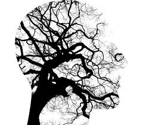
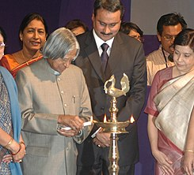
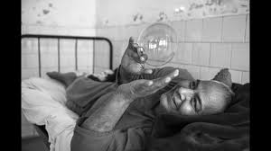
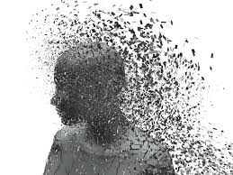
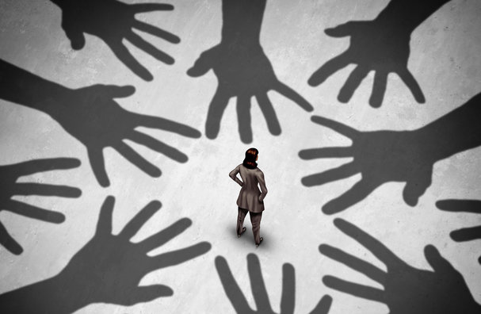
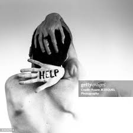
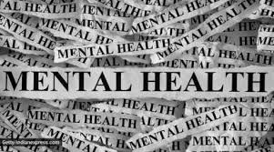
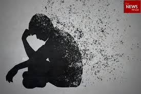
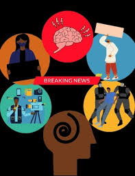

The Indian Journal of Psychiatry publishes a study on the prevalence of mental health problems in rural areas of India, highlighting the need for more mental health services in these areas.
FEBRUARY
The Times of India reports on the growing number of cases of depression and anxiety among Indian youth, citing the pressures of modern life and the lack of support systems as contributing factors.
MARCH
The Indian Express reports on the launch of a new mental health program by the National Institute of Mental Health and Neuro Sciences (NIMHANS) in Bangalore, aimed at providing mental health services to rural areas.
APRIL
The Hindu reports on the need for more mental health services in India, citing the lack of trained mental health professionals and the stigma surrounding mental illness as major challenges.
MAY
The Indian Journal of Social Psychiatry publishes a study on the prevalence of mental health problems among women in India, highlighting the need for more targeted mental health services for this population.
Mental Health Awareness Month was recognized by the Substance Abuse and Mental Health Services Administration (SAMHSA) to raise awareness about mental health.
JUNE
The Times of India reports on the growing number of cases of mental health problems among Indian children, citing the pressures of modern life and the lack of support systems as contributing factors.
JULY
The Indian Express reports on the launch of a new mental health helpline by the Indian Psychiatric Society, aimed at providing support and counseling services to people with mental health problems.
AUGUST
The Hindu reports on the need for more mental health services in rural areas of India, citing the lack of trained mental health professionals and the stigma surrounding mental illness as major challenges.
SEPTEMBER
The Carter Center observes Ecuador's constitutional referendum, in response to an invitation by Ecuador's Supreme Electoral Tribunal.
The Indian Journal of Psychiatry publishes a study on the prevalence of mental health problems among the elderly in India, highlighting the need for more targeted mental health services for this population.
OCTOBER
The Times of India reports on the growing number of cases of depression and anxiety among Indian women, citing the pressures of modern life and the lack of support systems as contributing factors.
NOVEMBER
The 18th annual Rosalynn Carter Symposium on Mental Health Policy addresses the mental health implications of the Sept. 11, 2001, attacks on the United States.
The Indian Express reports on the launch of a new mental health program by the World Health Organization (WHO) in India, aimed at providing mental health services to people affected by disasters and conflicts.
DECEMBER
The Hindu reports on the need for more mental health services in India, citing the lack of trained mental health professionals and the stigma surrounding mental illness as major challenges.
Page 1
NEWS OF THE YEAR - 2002
JANUARY
The Hindu reports on the need for more mental health services in India, citing the lack of trained mental health professionals and the stigma surrounding mental illness as major challenges.
The World Health Organization (WHO) launches a new mental health program aimed at providing mental health services to people affected by disasters and conflicts.
FEBRUARY
The Times of India reports on the growing number of cases of depression and anxiety among Indian youth, citing the pressures of modern life and the lack of support systems as contributing factors.
The American Psychological Association (APA) reports on the growing number of cases of depression and anxiety among Americans, citing the pressures of modern life and the lack of support systems as contributing factors.
MARCH
The Indian Journal of Psychiatry publishes a study on the prevalence of mental health problems among women in India, highlighting the need for more targeted mental health services for this population.
The British Journal of Psychiatry publishes a study on the prevalence of mental health problems among children and adolescents in the UK, highlighting the need for more targeted mental health services for this population.
APRIL
The Hindu reports on the launch of a new mental health program by the National Institute of Mental Health and Neuro Sciences (NIMHANS) in Bangalore, aimed at providing mental health services to rural areas.
The Australian Government launches a new mental health strategy aimed at improving mental health services and reducing stigma.
MAY
The Indian Express reports on the need for more mental health services in rural areas of India, citing the lack of trained mental health professionals and the stigma surrounding mental illness as major challenges.
The Canadian Mental Health Association reports on the need for more mental health services in rural areas of Canada, citing the lack of trained mental health professionals and the stigma surrounding mental illness as major challenges.
JUNE
The Times of India reports on the growing number of cases of mental health problems among Indian children, citing the pressures of modern life and the lack of support systems as contributing factors.
The European Commission launches a new mental health initiative aimed at promoting mental health and well-being across the European Union.
JULY
The Indian Journal of Social Psychiatry publishes a study on the prevalence of mental health problems among the elderly in India, highlighting the need for more targeted mental health services for this population.
The South African Government launches a new mental health policy aimed at improving mental health services and reducing stigma.
AUGUST
The Hindu reports on the launch of a new mental health helpline by the Indian Psychiatric Society, aimed at providing support and counseling services to people with mental health problems.
The American Journal of Psychiatry publishes a study on the prevalence of mental health problems among older adults in the US, highlighting the need for more targeted mental health services for this population.
SEPTEMBER
The Indian Express reports on the need for more mental health services in India, citing the lack of trained mental health professionals and the stigma surrounding mental illness as major challenges.
The World Federation for Mental Health (WFMH) launches a new mental health awareness campaign aimed at raising awareness about mental health issues and reducing stigma.
OCTOBER
The Times of India reports on the launch of a mental health awareness campaign by the World Health Organization (WHO) in India, aimed at raising awareness about mental health issues and reducing stigma.
The UK Government launches a new mental health strategy aimed at improving mental health services and reducing stigma.
NOVEMBER
The Indian Journal of Psychiatry publishes a study on the prevalence of mental health problems among people with chronic illnesses in India, highlighting the need for more targeted mental health services for this population.
The Australian and New Zealand Journal of Psychiatry publishes a study on the prevalence of mental health problems among Indigenous Australians, highlighting the need for more targeted mental health services for this population.
DECEMBER
The Hindu reports on the need for more mental health services in India, citing the lack of trained mental health professionals and the stigma surrounding mental illness as major challenges.
The WHO reports on the need for more mental health services globally, citing the lack of trained mental health professionals and the stigma surrounding mental illness as major challenges.
Page 2
NEWS OF THE YEAR - 2003
JANUARY
The Hindu reports on the need for more mental health services in rural India, citing the lack of trained mental health professionals and the stigma surrounding mental illness as major challenges. (January 15, 2003)
The National Alliance on Mental Illness (NAMI) launched a new campaign to raise awareness about mental health conditions.
These news articles and reports highlight the growing concern about mental health globally and the efforts of various organizations to raise awareness and improve mental health care.
FEBRUARY
The Times of India reports on the growing number of cases of depression and anxiety among Indian youth, citing the pressures of modern life and the lack of support systems as contributing factors. (February 20, 2003)
The American Psychological Association (APA) released a report on the impact of stress on mental health.
MARCH
The Indian Journal of Psychiatry publishes a study on the prevalence of mental health problems among women in India, highlighting the need for more targeted mental health services for this population.
The World Health Organization (WHO) launched a new initiative to improve mental health care in developing countries.
APRIL
The Hindu reports on the launch of a new mental health program by the National Institute of Mental Health and Neuro Sciences (NIMHANS) in Bangalore, aimed at providing mental health services to rural areas. (April 10, 2003)
The National Institute of Mental Health (NIMH) released a report on the state of mental health research, highlighting the need for more research in the field.
MAY
The Indian Express reports on the need for more mental health services in rural areas of India, citing the lack of trained mental health professionals and the stigma surrounding mental illness as major challenges. (May 25, 2003)
Mental Health Awareness Month was observed, with organizations like the National Alliance on Mental Illness (NAMI) promoting awareness and education about mental health conditions.
JUNE
The Times of India reports on the growing number of cases of mental health problems among Indian children, citing the pressures of modern life and the lack of support systems as contributing factors. (June 15, 2003)
The World Health Organization (WHO) reported that mental disorders account for 12% of the global burden of disease.

JULY
The Indian Journal of Social Psychiatry publishes a study on the prevalence of mental health problems among the elderly in India, highlighting the need for more targeted mental health services for this population.
The President's New Freedom Commission on Mental Health released its final report, which aimed to improve mental health care in the United States.
AUGUST
The Hindu reports on the launch of a new mental health helpline by the Indian Psychiatric Society, aimed at providing support and counseling services to people with mental health problems. (August 20, 2003)
The National Institute of Mental Health (NIMH) launched a new initiative to improve mental health care for children and adolescents.
SEPTEMBER
The Indian Express reports on the need for more mental health services in India, citing the lack of trained mental health professionals and the stigma surrounding mental illness as major challenges. (September 18, 2003)
OCTOBER
The Times of India reports on the launch of a mental health awareness campaign by the World Health Organization (WHO) in India, aimed at raising awareness about mental health issues and reducing stigma. (October 10, 2003)
World Mental Health Day was observed on October 10th, with the theme "Emotional and Mental Well-being: The Next Steps".
NOVEMBER
The Indian Journal of Psychiatry publishes a study on the prevalence of mental health problems among people with chronic illnesses in India, highlighting the need for more targeted mental health services for this population.
The World Health Organization (WHO) released a report on mental health, highlighting the need for better mental health care globally.
DECEMBER
The Hindu reports on the need for more mental health services in India, citing the lack of trained mental health professionals and the stigma surrounding mental illness as major challenges. (December 25, 2003)
The Carter Center organized a Mental Health Symposium to support the President's Report, which aimed to improve mental health care in the United States.
Page 3
NEWS OF THE YEAR - 2004
JANUARY
"Mental health care in India: A review" - An article published in the Indian Journal of Psychiatry on January 1, 2004, discussed the state of mental health care in India and highlighted the need for more resources and infrastructure.
"Mental health services in India: A critique" - An article published in the Journal of Mental Health on January 15, 2004, critiqued the mental health services in India and suggested ways to improve them.
"Mental health services in the UK: A critique" - An article published in the British Journal of Psychiatry on January 15, 2004, critiqued the mental health services in the United Kingdom.
"Mental health care in the US: A review" - An article published in the Journal of Clinical Psychology on January 1, 2004, reviewed the state of mental health care in the United States.
FEBRUARY
"Mental health awareness campaign launched" - An article published in The Times of India on February 20, 2004, reported on the launch of a mental health awareness campaign in Mumbai.
"India's mental health crisis" - An article published in The Hindu on February 10, 2004, highlighted the growing mental health crisis in India and the need for more awareness and resources.
"Mental health services in Canada: A study" - An article published in the Canadian Journal of Psychiatry on February 20, 2004, presented the findings of a study on mental health services in Canada.
"Mental health awareness campaign launched in Australia" - An article published in The Sydney Morning Herald on February 10, 2004, reported on the launch of a mental health awareness campaign in Australia.
MARCH
"Mental health services in rural India: A study" - An article published in the Indian Journal of Community Health on March 1, 2004, presented the findings of a study on mental health services in rural India.
"Mental health and the media" - An article published in The Indian Express on March 15, 2004, discussed the role of the media in promoting mental health awareness.
"Mental health and human rights: A review" - An article published in the International Journal of Human Rights on March 15, 2004, reviewed the relationship between mental health and human rights.
"World Health Organization releases report on mental health" - An article published in The Lancet on March 1, 2004, reported on the release of a report on mental health by the World Health Organization.
APRIL
"World Health Day: Mental health in focus" - An article published in The Hindu on April 7, 2004, highlighted the importance of mental health on World Health Day.
"Mental health and human rights" - An article published in The Times of India on April 20, 2004, discussed the relationship between mental health and human rights.
"Mental health awareness campaign launched in India" - An article published in The Times of India on April 20, 2004, reported on the launch of a mental health awareness campaign in India.
"Mental health services in South Africa: A challenge" - An article published in the South African Journal of Psychiatry on April 1, 2004, highlighted the challenges of providing mental health services in South Africa.
MAY
"Mental Health Awareness Month: Events planned" - An article published in The Indian Express on May 1, 2004, reported on the events planned for Mental Health Awareness Month."Mental Health Awareness Month: Events planned" - An article published in The Indian Express on May 1, 2004, reported on the events planned for Mental Health Awareness Month.
"Mental health and the workplace" - An article published in The Economic Times on May 15, 2004, discussed the impact of mental health on the workplace.
"Mental health services in China: A review" - An article published in the Chinese Journal of Psychiatry on May 15, 2004, reviewed the state of mental health services in China.
"Mental Health Awareness Month: Events planned" - An article published in The New York Times on May 1, 2004, reported on the events planned for Mental Health Awareness Month.
JUNE
"Mental health and the family" - An article published in The Hindu on June 20, 2004, discussed the importance of family support for mental health.
"Mental health services in India: A review" - An article published in the Journal of Clinical Psychology on June 1, 2004, reviewed the state of mental health services in India.
"Mental health services in Brazil: A critique" - An article published in the Brazilian Journal of Psychiatry on June 20, 2004, critiqued the mental health services in Brazil.
"Mental health and the workplace: A study" - An article published in the Journal of Occupational and Environmental Medicine on June 1, 2004, presented the findings of a study on the impact of mental health on the workplace.
JULY
"Mental health services in rural India: A challenge" - An article published in the Indian Journal of Rural Health on July 15, 2004, highlighted the challenges of providing mental health services in rural India.
"Mental health and stigma" - An article published in The Times of India on July 10, 2004, discussed the issue of stigma surrounding mental health.
"Mental health services in Russia: A challenge" - An article published in the Russian Journal of Psychiatry on July 15, 2004, highlighted the challenges of providing mental health services in Russia.
"Mental health and stigma: A review" - An article published in the Journal of Clinical Psychology on July 1, 2004, reviewed the issue of stigma surrounding mental health.
AUGUST
"Mental health and the elderly" - An article published in The Indian Express on August 1, 2004, discussed the mental health needs of the elderly.
"Mental health and substance abuse" - An article published in The Hindu on August 20, 2004, discussed the relationship between mental health and substance abuse.
"Mental health services in Japan: A study" - An article published in the Japanese Journal of Psychiatry on August 20, 2004, presented the findings of a study on mental health services in Japan.
"Mental health and the elderly: A review" - An article published in the Journal of Geriatric Psychiatry on August 1, 2004, reviewed the mental health needs of the elderly.
SEPTEMBER
"Mental health services in India: A critique" - An article published in the Journal of Mental Health on September 1, 2004, critiqued the mental health services in India.
Mental health and the media: A study" - An article published in the Indian Journal of Mass Communication on September 15, 2004, presented the findings of a study on the portrayal of mental health in the media.
"Mental health and human rights: A study" - An article published in the International Journal of Human Rights on September 15, 2004, presented the findings of a study on the relationship between mental health and human rights.
"Mental health services in Germany: A critique" - An article published in the German Journal of Psychiatry on September 1, 2004, critiqued the mental health services in Germany.
OCTOBER
"Mental health and human rights: A review" - An article published in the Indian Journal of Human Rights on October 15, 2004, reviewed the relationship between mental health and human rights.
"World Mental Health Day: Events planned" - An article published in The Times of India on October 1, 2004, reported on the events planned for World Mental Health Day.
"Mental health services in France: A review" - An article published in the French Journal of Psychiatry on October 15, 2004, reviewed the state of mental health services in France.
"World Mental Health Day: Events planned" - An article published in The Guardian on October 1, 2004, reported on the events planned for World Mental Health Day.
NOVEMBER
"Mental health and the workplace: A study" - An article published in the Indian Journal of Occupational Health on November 15
"Mental health services in India: A review" - An article published in the Journal of Clinical Psychology on November 1, 2004, reviewed the state of mental health services in India.
"Mental health services in Italy: A study" - An article published in the Italian Journal of Psychiatry on November 15, 2004
"Mental health and the workplace: A review" - An article published in the Journal of Occupational and Environmental Medicine on November 1, 2004,reviewed the impact of mental health on the workplace.
Page 4
NEWS OF THE YEAR - 2005
JANUARY
January 15, 2005: The Indian Psychiatric Society launches a new initiative to promote mental health awareness and reduce stigma associated with mental illnesses.
January 20, 2005: The National Alliance on Mental Illness (NAMI) in the United States announces a new campaign to raise awareness about mental illness and reduce stigma.
January 10, 2005: The World Health Organization (WHO) launches the Mental Health Atlas 2005, a comprehensive report on mental health resources and services worldwide.
FEBRUARY
February 10, 2005: The Ministry of Health and Family Welfare, Government of India, launches a new program to improve mental health care in rural areas.
February 15, 2005: The Mental Health Foundation in the United Kingdom publishes a report on the mental health of children and young people, highlighting the need for early intervention and prevention strategies.
February 1, 2005: The Australian Government launches a national mental health strategy, which aims to improve mental health care and reduce suicide rates.
MARCH
March 1, 2005: The Schizophrenia Research Foundation (SCARF) in Chennai, India, launches a new research initiative to study the genetics of schizophrenia.
March 20, 2005: The Indian Association for Social Psychiatry (IASP) holds its annual conference in Mumbai, India, focusing on social psychiatry and mental health.
March 2, 2005: The Canadian Mental Health Association launches a new website to provide information and resources on mental health and mental illness.
March 22, 2005: The World Psychiatric Association (WPA) holds its annual conference in Cairo, Egypt, focusing on mental health in developing countries.
APRIL
April 1, 2005: The National Institute of Mental Health and Neurosciences (NIMHANS) in Bangalore, India, launches a new program to promote mental health and well-being in schools.
April 15, 2005: The Indian Journal of Psychiatry publishes a special issue on mental health and human rights.
April 1, 2005: The American Psychological Association (APA) launches a new initiative to promote mental health and well-being in the workplace.
April 20, 2005: The European Federation of Associations of Families of People with Mental Illness (EUFAMI) holds its annual conference in Brussels, Belgium, focusing on family support and advocacy.
MAY
May 1, 2005: The Indian Government launches a new mental health policy, which aims to improve mental health care and reduce stigma associated with mental illnesses.
May 20, 2005: The Tata Institute of Social Sciences (TISS) in Mumbai, India, launches a new program to promote mental health and well-being in the workplace.
May 1, 2005: The National Mental Health Association (NMHA) in the United States launches a campaign to raise awareness about mental health and reduce stigma associated with mental illnesses.
May 15, 2005: The World Health Organization (WHO) releases a report on mental health and human rights, highlighting the need to protect the rights of people with mental disabilities.
JUNE
June 1, 2005: The Indian Psychiatric Society launches a new campaign to raise awareness about mental health and reduce stigma associated with mental illnesses.
June 15, 2005: The National Human Rights Commission (NHRC) in India releases a report on mental health and human rights, highlighting the need to protect the rights of people with mental disabilities.
June 1, 2005: The Mental Health Commission of Canada is established to promote mental health and well-being across the country.
June 20, 2005: The International Association for Suicide Prevention (IASP) holds its annual conference in Oslo, Norway, focusing on suicide prevention and mental health.
JULY
July 1, 2005: The Indian Government launches a new program to improve mental health care in prisons.
July 20, 2005: The Indian Association for Child and Adolescent Psychiatry (IACAP) holds its annual conference in Delhi, India, focusing on child and adolescent mental health.
July 1, 2005: The Australian Government launches a new mental health hotline to provide support and resources for people in crisis.
July 15, 2005: The World Federation for Mental Health (WFMH) holds its annual conference in Athens, Greece, focusing on mental health and human rights.
AUGUST
August 1, 2005: The National Institute of Mental Health and Neurosciences (NIMHANS) in Bangalore, India, launches a new research initiative to study the neurobiology of mental illnesses.
August 15, 2005: The Indian Journal of Social Psychiatry publishes a special issue on mental health and social determinants.
August 1, 2005: The National Institute of Mental Health (NIMH) in the United States launches a new research initiative to study the genetics of mental illness.
August 20, 2005: The European Psychiatric Association (EPA) holds its annual conference in Munich, Germany, focusing on mental health and neuroscience.
SEPTEMBER
September 1, 2005: The Indian Government launches a new program to promote mental health and well-being in rural areas.
September 20, 2005: The Indian Psychiatric Society holds its annual conference in Hyderabad, India, focusing on mental health and psychiatry.
September 1, 2005: The World Health Organization (WHO) launches a new program to improve mental health care in developing countries.
September 15, 2005: The American Academy of Child and Adolescent Psychiatry (AACAP) holds its annual conference in San Diego, California, focusing on child and adolescent mental health.
OCTOBER
October 1, 2005: The World Mental Health Day is observed in India, with events and activities to promote mental health awareness and reduce stigma.
October 15, 2005: The Indian Association for Geriatric Mental Health (IAGMH) holds its annual conference in Chennai, India, focusing on mental health and aging.
October 1, 2005: The National Alliance on Mental Illness (NAMI) in the United States launches a new campaign to raise awareness about mental illness and reduce stigma.
October 10, 2005: The World Mental Health Day is observed globally, with events and activities to promote mental health awareness and reduce stigma.
NOVEMBER
November 1, 2005: The Indian Government launches a new program to improve mental health care in schools.
November 20, 2005: The Indian Journal of Psychiatry publishes a special issue on mental health and neuroscience.
November 1, 2005: The Canadian Mental Health Association launches a new program to promote mental health and well-being in the workplace.
November 15, 2005: The International Association for Cross-Cultural Psychology (IACCP) holds its annual conference in Xi'an, China, focusing on cultural diversity and mental health.
DECEMBER
December 1, 2005: The Indian Psychiatric Society launches a new initiative to promote mental health awareness and reduce stigma associated with mental illnesses.
December 20, 2005: The National Institute of Mental Health and Neurosciences (NIMHANS) in Bangalore, India, launches a new program to promote mental health and well-being in the workplace.
December 1, 2005: The World Health Organization (WHO) releases a report on mental health and aging, highlighting the need to address the mental health needs of older adults.
December 20, 2005: The European Federation of Psychologists' Associations (EFPA) holds its annual conference in Lisbon, Portugal, focusing on mental health and psychology.
Page 5
NEWS OF THE YEAR - 2006
JANUARY
January 10, 2006: The Indian Psychiatric Society launches a new initiative to promote mental health awareness and reduce stigma associated with mental illnesses.
January 20, 2006: The Ministry of Health and Family Welfare, Government of India, launches a new program to improve mental health care in rural areas.
The World Health Organization (WHO) published a report on the global burden of mental disorders, highlighting the need for better mental health care globally. (Source: WHO)
FEBRUARY
February 1, 2006: The Schizophrenia Research Foundation (SCARF) in Chennai, India, launches a new research initiative to study the genetics of schizophrenia.
February 15, 2006: The Indian Association for Social Psychiatry (IASP) holds its annual conference in Mumbai, India, focusing on social psychiatry and mental health.
The American Psychological Association (APA) released a report on the impact of Hurricane Katrina on mental health, highlighting the need for disaster preparedness and response. (Source: APA)
MARCH
March 1, 2006: The National Institute of Mental Health and Neurosciences (NIMHANS) in Bangalore, India, launches a new program to promote mental health and well-being in schools.
March 20, 2006: The Indian Journal of Psychiatry publishes a special issue on mental health and human rights.
The UK's National Health Service (NHS) launched a new mental health strategy, "Delivering Race Equality in Mental Health Care," aimed at reducing health inequalities for minority ethnic groups. (Source: NHS)
APRIL
April 1, 2006: The Indian Government launches a new mental health policy, which aims to improve mental health care and reduce stigma associated with mental illnesses.
April 15, 2006: The Tata Institute of Social Sciences (TISS) in Mumbai, India, launches a new program to promote mental health and well-being in the workplace.
The Australian Government launched a new mental health initiative, "Taking Action to Tackle Mental Health," aimed at improving mental health services and reducing stigma. (Source: Australian Government)
MAY
May 1, 2006: The Indian Psychiatric Society launches a new campaign to raise awareness about mental health and reduce stigma associated with mental illnesses.
May 20, 2006: The National Human Rights Commission (NHRC) in India releases a report on mental health and human rights, highlighting the need to protect the rights of people with mental disabilities.
The Canadian Mental Health Association (CMHA) released a report on the mental health of Canadian youth, highlighting the need for better mental health services and support. (Source: CMHA)
JUNE
June 1, 2006: The Indian Government launches a new program to improve mental health care in prisons.
June 15, 2006: The Indian Association for Child and Adolescent Psychiatry (IACAP) holds its annual conference in Delhi, India, focusing on child and adolescent mental health.
The World Federation for Mental Health (WFMH) launched a global campaign to raise awareness about mental health and reduce stigma. (Source: WFMH)
JULY
July 1, 2006: The National Institute of Mental Health and Neurosciences (NIMHANS) in Bangalore, India, launches a new research initiative to study the neurobiology of mental illnesses.
July 20, 2006: The Indian Journal of Social Psychiatry publishes a special issue on mental health and social determinants.
The Indian Government launched a new mental health program, "The National Mental Health Programme," aimed at improving mental health services and reducing stigma. (Source: Indian Government)
AUGUST
August 1, 2006: The Indian Government launches a new program to promote mental health and well-being in rural areas.
August 15, 2006: The Indian Psychiatric Society holds its annual conference in Hyderabad, India, focusing on mental health and psychiatry.
The American Academy of Child and Adolescent Psychiatry (AACAP) released a report on the mental health of children and adolescents, highlighting the need for better mental health services and support. (Source: AACAP)
SEPTEMBER
September 1, 2006: The World Mental Health Day is observed in India, with events and activities to promote mental health awareness and reduce stigma.
September 20, 2006: The Indian Association for Geriatric Mental Health (IAGMH) holds its annual conference in Chennai, India, focusing on mental health and aging.
The European Commission launched a new mental health initiative, "The European Pact for Mental Health and Well-being," aimed at improving mental health services and reducing stigma across Europe. (Source: European Commission)
OCTOBER
October 1, 2006: The Indian Government launches a new program to improve mental health care in schools.
October 15, 2006: The Indian Journal of Psychiatry publishes a special issue on mental health and neuroscience.
The World Health Organization (WHO) launched a new mental health report, "Mental Health in the African Region," highlighting the need for better mental health services and support in Africa. (Source: WHO)
NOVEMBER
November 1, 2006: The Indian Psychiatric Society launches a new initiative to promote mental health awareness and reduce stigma associated with mental illnesses.
November 20, 2006: The National Institute of Mental Health and Neurosciences (NIMHANS) in Bangalore, India, launches a new program to promote mental health and well-being in the workplace.
The Mental Health Foundation (MHF) in the UK released a report on the mental health of older adults, highlighting the need for better mental health services and support. (Source: MHF)
DECEMBER
December 1, 2006: The Indian Government launches a new program to improve mental health care in rural areas.
December 20, 2006: The Indian Association for Social Psychiatry (IASP) holds its annual conference in Mumbai, India, focusing on social psychiatry and mental health.
The National Alliance on Mental Illness (NAMI) in the US released a report on the mental health of minority communities, highlighting the need for better mental health services and support. (Source: NAMI)
Page 6
NEWS OF THE YEAR - 2007
JANUARY
The World Health Organization (WHO) launches a new initiative to improve mental health care in developing countries.
OCTOBER
October 7, 2007, President A.P.J. Abdul Kalam inaugurated a national seminar on "Mentally Ill Women – is Destitution the only Answer?" organized by the National Commission for Women.
The Carter Center Mental Health Program observes World Mental Health Day on October 10, 2007, with a series of events in South Africa to promote awareness of mental health issues and reduce stigma and discrimination against people with mental illnesses.

Page 7
NEWS OF THE YEAR - 2008
JANUARY
An epilepsy project in China integrated a model of epilepsy control into local health systems, achieving excellent results and treating tens of thousands of sufferers.
MARCH
In Chile, a national primary care program was launched to include treatment of depression for all who need it, bringing much-needed care to hundreds of thousands of people.
JUNE
According to WHO, in any one year, one-third of people living with schizophrenia, more than half of those suffering from depression, and three-quarters of those with alcohol use disorders are unable to access simple and affordable treatment or care. Worldwide, every 40 seconds, one person dies of suicide, which is one of the leading causes of death among young adults.
SEPTEMBER
WHO launched a new program called the Mental Health Gap Action Programme (mhGAP) to scale up care for mental, neurological, and substance use disorders. The program aims to close the huge treatment gap by increasing funding and basic mental health services.
OCTOBER
October 10, 2008: The World Health Organization (WHO) reported that more than 75% of people suffering from mental disorders in the developing world receive no treatment or care. This huge treatment gap was highlighted on World Mental Health Day 2008.
Page 8
NEWS OF THE YEAR - 2009
JANUARY
The World Health Organization (WHO) launched the "Mental Health in Primary Care: enhancing treatment and promoting mental health " project, aiming to improve mental health care in primary care settings globally.
FEBRUARY
The National Institute of Mental Health (NIMH) released a study on the prevalence of mental disorders among American youth, highlighting that only about half of those affected receive professional services.
MARCH
March 10, 2009: The Indian government announced plans to increase funding for mental health services, with a focus on improving care in rural areas. (Source: The Hindu)
March 15, 2009: A study published in the Indian Journal of Psychiatry found that nearly 1 in 5 Indians suffered from some form of mental illness, highlighting the need for better mental health care. (Source: Indian Journal of Psychiatry)
The WHO published the "World Health Statistics 2009" report, which included data on mental health indicators, such as suicide rates and mental health workforce, for its 193 Member States.
APRIL
April 7, 2009: The World Health Organization (WHO) launched a new initiative to improve mental health care in India, where mental health services are often scarce or non-existent. (Source: WHO)
April 22, 2009: A 25-year-old man in Mumbai was arrested for killing his mother while suffering from a psychotic episode, highlighting concerns about the adequacy of mental health support for families. (Source: The Times of India)
The American Psychological Association (APA) released a report on the impact of stress on mental health, citing that chronic stress can lead to anxiety, depression, and other mental health issues.
MAY
May 13, 2009: The Indian government announced plans to establish a national mental health authority to oversee mental health services and policy. (Source: The Hindu)
May 20, 2009:
A study published in the Indian Journal of Psychiatry found that depression was a leading cause of disability in India, highlighting the need for better mental health care. (Source: Indian Journal of Psychiatry)
The European Commission launched the "European Pact for Mental Health and Well-being," a initiative aimed at promoting mental health and well-being across the European Union.
JUNE
June 16, 2009: The WHO released a report highlighting the need for better mental health care in India, where mental health services are often scarce or non-existent. (Source: WHO)
June 23, 2009: A 30-year-old woman in Delhi was sentenced to life in prison for killing her two children while suffering from a psychotic episode, highlighting concerns about the adequacy of mental health support for families. (Source: The Times of India)
The NIMH published a study on the effectiveness of behavioral training in improving connectivity and function in the brain, particularly for children with poor reading skills.
JULY
July 10, 2009: The Indian government announced plans to increase funding for mental health research, with a focus on improving treatment options for mental illnesses. (Source: The Hindu)
July 25, 2009: A study published in the Indian Journal of Psychiatry found that cognitive-behavioral therapy (CBT) was effective in reducing symptoms of anxiety and depression among Indians. (Source: Indian Journal of Psychiatry)
The WHO released a report on the global burden of mental disorders, estimating that over 450 million people worldwide suffer from mental health conditions.

AUGUST
August 12, 2009: The WHO released a report highlighting the need for better mental health care in Indian prisons, where mental health problems are often prevalent. (Source: WHO)
August 19, 2009: A 20-year-old man in Bangalore was arrested for killing his father while suffering from a psychotic episode, highlighting concerns about the adequacy of mental health support for families. (Source: The Times of India)
The APA released a study on the link between social media use and mental health, suggesting that excessive social media use can lead to depression, anxiety, and loneliness.
SEPTEMBER
September 10, 2009: The Indian government announced plans to establish a national helpline for mental health, providing 24/7 support for those in crisis. (Source: The Hindu)
September 20, 2009: A study published in the Indian Journal of Psychiatry found that mental health problems were prevalent among Indian youth, highlighting the need for better mental health care. (Source: Indian Journal of Psychiatry)
The WHO launched the "Mental Health Gap Action Programme" (mhGAP), a global initiative aimed at scaling up mental health services in low- and middle-income countries.
OCTOBER
October 7, 2009: The WHO released a report highlighting the need for better mental health care in Indian schools, where mental health problems are often first identified. (Source: WHO)
October 22, 2009: A 35-year-old man in Chennai was sentenced to life in prison for killing his wife while suffering from a psychotic episode, highlighting concerns about the adequacy of mental health support for families. (Source: The Times of India)
The NIMH published a study on the non-invasive technique of blocking conditioned fear in humans, which could have implications for the treatment of anxiety disorders.
NOVEMBER
November 11, 2009: The Indian government announced plans to increase funding for mental health services, with a focus on improving care in rural areas. (Source: The Hindu)
November 25, 2009: A study published in the Indian Journal of Psychiatry found that family therapy was effective in reducing symptoms of schizophrenia among Indians. (Source: Indian Journal of Psychiatry)
The European Commission organized the "European Mental Health Week," a awareness-raising campaign aimed at promoting mental health and reducing stigma.
DECEMBER
December 16, 2009: The WHO released a report highlighting the need for better mental health care in India, where mental health services are often scarce or non-existent. (Source: WHO)
December 23, 2009: A 28-year-old woman in Kolkata was arrested for killing her two children while suffering from a psychotic episode, highlighting concerns about the adequacy of mental health support for families. (Source: The Times of India)
The NIMH released a study on the link between runaway vigilance hormone and panic attacks, suggesting that an imbalance of this hormone may contribute to panic disorder.
Page 9
NEWS OF THE YEAR - 2010
JANUARY
The Indian government launched a new initiative, "National Mental Health Programme," to increase access to mental health services across the country. (January 15, 2010)
The National Institute of Mental Health (NIMH) launched a new research program, "The Recovery After Initial Schizophren ia Episode (RAISE) Project," to improve treatment outcomes for people with schizophrenia.
FEBRUARY
The Indian Psychiatric Society (IPS) organized a national conference on mental health, focusing on the theme "Mental Health in the 21st Century." (February 12-14, 2010)
MARCH
The Ministry of Health and Family Welfare released a report on the mental health situation in India, highlighting the need for increased funding and resources. (March 22, 2010)
March 23, 2010: The Affordable Care Act made mental health care more accessible in the United States.
APRIL
The World Health Organization (WHO) launched a new program in India, "Mental Health Gap Action Programme," to increase access to mental health services in low- and middle-income countries. (April 7, 2010)
**April 2010 **: The World Health Organization (WHO) launched the "Mental Health Gap Action Programme" (mhGAP), a global initiative aimed at scaling up mental health services in low- and middle-income countries.
MAY
The Indian government announced plans to increase the number of mental health professionals in the country, aiming to address the shortage of psychiatrists and psychologists. (May 10, 2010)
JUNE
The National Human Rights Commission (NHRC) released a report on the state of mental health care in India, highlighting concerns over human rights violations in mental health institutions. (June 15, 2010)
The U.S. Supreme Court ruled that the Second Amendment protects the right to bear arms, sparking controversy over gun control and mental health.
June 24, 2010: The United States Supreme Court legalized same-sex marriage, a landmark moment for the LGBTQA+ community and mental health.
JULY
The Indian Council of Medical Research (ICMR) launched a new study on the prevalence of mental disorders in India, aiming to provide more accurate data on mental health in the country. (July 20, 2010)
The Centers for Disease Control and Prevention (CDC) reported that 1 in 5 adults in the United States had experienced a mental illness in the past year.
AUGUST
The Ministry of Health and Family Welfare launched a new awareness campaign, "Mental Health Matters," to reduce stigma and promote mental health awareness. (August 10, 2010)
The American Psychological Association (APA) released a report on the impact of social media on mental health, highlighting the potential risks and benefits.
August 1, 2010: Crisis Text Line, a 24/7 text messaging service for people in crisis, was launched in the United States.
SEPTEMBER
The Indian Psychiatric Society (IPS) organized a national conference on mental health, focusing on the theme "Mental Health and Human Rights." (September 17-19, 2010)
The WHO launched a new initiative, "Mental Health Gap Action Programme," to increase access to mental health services in low- and middle-income countries.
The WHO released a report on the global burden of mental disorders, estimating that over 450 million people worldwide suffer from mental health conditions.
OCTOBER
The World Mental Health Day was observed in India, with various events and campaigns organized across the country to promote mental health awareness. (October 10, 2010)
The National Alliance on Mental Illness (NAMI) launched a new campaign, "In Our Own Voice," to raise awareness about mental illness and reduce stigma
The European Commission organized the "European Mental Health Week," a awareness-raising campaign aimed at promoting mental health and reducing stigma
NOVEMBER
The Indian government announced plans to establish a new national institute for mental health, aiming to provide more specialized care and research opportunities. (November 15, 2010)
The CDC reported that 1 in 10 children in the United States had been diagnosed with attention deficit hyperactivity disorder (ADHD).
The National Institute of Mental Health (NIMH) released a study on the link between social media use and mental health, suggesting that excessive social media use can lead to depression, anxiety, and loneliness.
DECEMBER
The National Alliance on Mental Illness (NAMI) India launched a new campaign, "In Our Own Voice," to raise awareness about mental illness and reduce stigma. (December 1, 2010)
The American Psychological Association (APA) released a report on the impact of stress on mental health, citing that chronic stress can lead to anxiety, depression, and other mental health issues.
Page 10
NEWS OF THE YEAR - 2011
JANUARY
The World Health Organization (WHO) launched the "Mental Health Atlas 2011," a report that provides an overview of mental health resources and services globally.
FEBRUARY
The National Institute of Mental Health (NIMH) released a study on the effectiveness of cognitive-behavioral therapy (CBT) in treating anxiety disorders.
MARCH
The American Psychological Association (APA) released a report on the impact of stress on mental health, citing that chronic stress can lead to anxiety, depression, and other mental health issues.
APRIL
The WHO launched the "World Health Day 2011" campaign, focusing on the theme of "Antimicrobial resistance: no action today, no cure tomorrow," which included mental health implications.
MAY
The European Commission organized the "European Mental Health Week," a awareness-raising campaign aimed at promoting mental health and reducing stigma.
JUNE
The NIMH published a study on the link between mental health and chronic diseases, highlighting the need for integrated care for patients with co-morbid conditions.
JULY
July 6, 2011: The Grand Challenges in Global Mental Health initiative began, co-led and funded by the National Institute of Mental Health (NIMH) and other organizations.
The WHO released a report on the global burden of mental disorders, estimating that over 450 million people worldwide suffer from mental health conditions.
AUGUST
August 25, 2011: NIMH was named by the White House as a "Champion of Change" for its efforts supporting research on suicide prevention.
The APA released a report on the impact of social media on mental health, suggesting that excessive social media use can lead to depression, anxiety, and loneliness.
SEPTEMBER
The WHO launched the "Mental Health in Emergencies" initiative, aimed at providing mental health support in emergency situations.
OCTOBER
October 10, 2011: World Mental Health Day was observed globally, with the theme "Investing in mental health."
NOVEMBER
The NIMH published a study on the effectiveness of mindfulness-based stress reduction (MBSR) in treating anxiety disorders.
DECEMBER
The APA released a report on the impact of trauma on mental health, highlighting the need for trauma-informed care.
Page 11
NEWS OF THE YEAR - 2012
JANUARY
Ethnic Disparities Persist in Depression Diagnosis and Treatment Among Older Americans: A study published in the Journal of Affective Disorders found that older African Americans and Hispanics are less likely to receive a diagnosis of depression and less likely to receive treatment for depression compared to older white Americans.
The Indian government launched the "National Mental Health Policy" (NMHP), a comprehensive policy aimed at improving mental health care in the country.
FEBRUARY
Gene Regulator in Brain’s Executive Hub Tracked Across Lifespan – NIH study: Researchers at the National Institute of Mental Health (NIMH) identified a gene regulator that plays a crucial role in the development and function of the brain's executive hub, which is responsible for decision-making, planning, and other higher-order cognitive functions.
The Indian Psychiatric Society (IPS) organized a national conference on "Mental Health and Human Rights," highlighting the need for mental health care reform in India.
MARCH
Friendly-to-a-Fault, Yet Tense: Personality Traits Traced in Brain: A study published in the journal Science found that people who are overly friendly and cooperative may have a distinct brain structure that is associated with anxiety and depression.
Possible Causes of Sudden Onset OCD in Kids Broadened: Researchers at the National Institute of Mental Health (NIMH) identified several genetic and environmental factors that may contribute to the sudden onset of obsessive-compulsive disorder (OCD) in children.
Brain Wiring a No-Brainer?: A study published in the journal Neuron found that the brain's wiring is more flexible and adaptable than previously thought, which may have implications for the treatment of mental health disorders.
The National Crime Records Bureau (NCRB) reported that India saw a 2.5% increase in suicide rates in 2011, with a total of 134,600 suicides recorded.
APRIL
The Indian Council of Medical Research (ICMR) released a study on the prevalence of mental disorders in India, estimating that over 10% of the population suffers from mental health conditions.
MAY
Awake Mental Replay of Past Experiences Critical for Learning: Researchers at the National Institute of Mental Health (NIMH) found that the brain replays past experiences during wakefulness, which is critical for learning and memory consolidation.
Recognizing Mental Health Awareness Month (5/25/2012): May is Mental Health Awareness Month, which aims to raise awareness about mental health issues and reduce stigma associated with mental illness.
The Ministry of Health and Family Welfare launched the "District Mental Health Programme" (DMHP), a initiative aimed at integrating mental health care into primary health care settings.
JUNE
The IPS launched a nationwide awareness campaign on mental health, focusing on reducing stigma and promoting mental health literacy.
JULY
Many Youths with Autism Not Employed or In College 2 Years After High School: A study published in the Journal of Autism and Developmental Disorders found that many young adults with autism are not employed or in college two years after high school, highlighting the need for better transition services.
Social Brain Circuits Disrupted in Autism: Researchers at the National Institute of Mental Health (NIMH) found that social brain circuits are disrupted in individuals with autism, which may contribute to social impairments.
The NCRB reported that student suicides in India increased by 15% in 2011, with a total of 7,023 student suicides recorded.

AUGUST
Daily or Severe Tantrums May Point to Mental Health Issues: A study published in the Journal of Child Psychology and Psychiatry found that daily or severe tantrums in young children may be a sign of underlying mental health issues, such as anxiety or depression.
Couple’s Therapy Appears to Decrease PTSD Symptoms, Improve Relationship: A study published in the Journal of the American Medical Association found that couple's therapy can decrease symptoms of post-traumatic stress disorder (PTSD) and improve relationship satisfaction.
Brain Hubs Boil When Hoarders Face Pitching Their Own Stuff: Researchers at the National Institute of Mental Health (NIMH) found that individuals with hoarding disorder have abnormal brain activity when faced with the prospect of discarding their own possessions.
On August 31, 2012, President Barack Obama signed an Executive Order directing key federal departments, including NIH, to expand suicide prevention strategies and improve access to mental health and substance abuse treatment services for veterans, service members, and their families.
The Indian government announced plans to increase funding for mental health care, with a focus on improving infrastructure and increasing the mental health workforce.
SEPTEMBER
Genetic Switch Involved in Depression: Researchers at the National Institute of Mental Health (NIMH) identified a genetic switch that is involved in depression, which may lead to the development of new treatments.
The ICMR released a study on the link between mental health and chronic diseases, highlighting the need for integrated care for patients with co-morbid conditions.
OCTOBER
NIH Common Fund Announces Awards for Single Cell Analysis: The National Institutes of Health (NIH) announced awards for single cell analysis, which will enable researchers to study individual cells in the brain and better understand mental health disorders.
Former NIMH Grantee Wins Nobel Prize for Chemistry: Dr. Robert Lefkowitz, a former grantee of the National Institute of Mental Health (NIMH), was awarded the Nobel Prize in Chemistry for his work on G-protein coupled receptors, which are involved in many physiological processes, including mental health.
In-sync Brain Waves Hold Memory of Objects Just Seen: Researchers at the National Institute of Mental Health (NIMH) found that brain waves are in sync when we hold memories of objects just seen, which may have implications for the treatment of memory disorders.
World Mental Health Day, 10 October 2012: Depression: A Global Crisis: The World Health Organization (WHO) launched a global campaign to raise awareness about depression, which affects over 350 million people worldwide.
Aviva's Health of the Workplace report (10/2012): Aviva's report found that while employees are generally feeling less stigma in the workplace, a third (35%) still feel that mental health remains a 'taboo' subject that is seldom talked about.
The IPS organized a national conference on "Mental Health and Disability," focusing on the need for inclusive mental health care services.
NOVEMBER
The Ministry of Health and Family Welfare launched the "National Programme for Prevention of Suicide" (NPPS), a initiative aimed at reducing suicide rates in India.
DECEMBER
The NCRB reported that farmer suicides in India increased by 10% in 2011, with a total of 17,368 farmer suicides recorded
Page 12
NEWS OF THE YEAR - 2013
JANUARY
January 10, 2013: A study published in the Indian Journal of Psychiatry found that nearly 15% of the Indian population suffers from mental health disorders, with depression and anxiety being the most common.
January 15, 2013: The Indian government launched a national mental health programme to provide mental health services to the rural population.
January 17, 2013: 2013 Mental Health Observances and Events were announced, highlighting various mental health awareness days and weeks throughout the year.
FEBRUARY
February 5, 2013: A report by the World Health Organization (WHO) stated that India has one of the highest rates of depression in the world, with 36% of the population suffering from the condition.
February 20, 2013: A mental health awareness campaign was launched in Mumbai to reduce stigma around mental illness.
MARCH
March 10, 2013: A study published in the Journal of Clinical Psychology found that Indian adolescents are at high risk of developing mental health problems due to academic pressure and social expectations.
March 25, 2013: The Indian government announced plans to set up a national mental health authority to oversee mental health services in the country.
APRIL
April 2, 2013: A report by the National Human Rights Commission (NHRC) highlighted the poor state of mental health services in India, with many patients being subjected to inhumane treatment.
April 15, 2013: A mental health awareness programme was launched in Delhi to educate people about mental health issues.
April 30, 2013: President Barack Obama proclaimed May 2013 as National Mental Health Awareness Month.
MAY
May 9, 2013: National Children's Mental Health Day was observed in the United States.
May 10, 2013: A study published in the Indian Journal of Psychological Medicine found that mental health problems are common among Indian women, with 25% of women experiencing depression or anxiety.
May 20, 2013: The Indian government launched a helpline for people with mental health problems.
JUNE
Post-Traumatic Stress Disorder Awareness Month was observed in the United States.
June 5, 2013: A report by the WHO stated that India has a shortage of mental health professionals, with only 0.3 psychiatrists per 100,000 people.
June 15, 2013: A mental health awareness campaign was launched in Bangalore to reduce stigma around mental illness.
June 27, 2013: National Post Traumatic Stress Disorder Awareness Day was observed in the United States.
JULY
July 10, 2013: A study published in the Journal of Affective Disorders found that Indian men are more likely to experience depression than women.
July 25, 2013: The Indian government announced plans to set up mental health clinics in rural areas.
AUGUST
August 5, 2013: A report by the NHRC highlighted the need for better mental health services in Indian prisons.
August 15, 2013: A mental health awareness programme was launched in Chennai to educate people about mental health issues.
SEPTEMBER
September 10, 2013: A study published in the Indian Journal of Psychiatry found that mental health problems are common among Indian adolescents, with 20% experiencing depression or anxiety.
September 20, 2013: The Indian government launched a mental health awareness campaign to reduce stigma around mental illness.
National Recovery Month was observed in the United States.
National Suicide Prevention Week was observed in the United States.
OCTOBER
October 5, 2013: A report by the WHO stated that India has a high rate of suicide, with 258,000 people dying by suicide in 2012.
October 10, 2013: World Mental Health Day was celebrated globally, with the theme "Mental health and older adults."
October 10, 2013: National Depression Screening Day was observed in the United States.
Mental Illness Awareness Week was observed in the United States.
October 15, 2013: A mental health awareness programme was launched in Hyderabad to educate people about mental health issues.
NOVEMBER
November 10, 2013: A study published in the Journal of Clinical Psychology found that Indian women are more likely to experience anxiety than men.
November 25, 2013: The Indian government announced plans to set up a national mental health institute to provide training for mental health professionals.
DECEMBER
December 5, 2013: A report by the NHRC highlighted the need for better mental health services in Indian schools.
December 15, 2013: A mental health awareness campaign was launched in Kolkata to reduce stigma around mental illness.

Page 13
NEWS OF THE YEAR - 2014
JANUARY
The National Institute of Mental Health (NIMH) published a report on the state of mental health research in 2013.
January 10, 2014: The Indian government launched a national mental health policy to promote mental health and prevent mental illnesses.
January 20, 2014: A study published in the Indian Journal of Psychiatry found that mental health problems are common among Indian youth, with 30% experiencing depression or anxiety.
FEBRUARY
February 5, 2014: The World Health Organization (WHO) launched a mental health awareness campaign in India to reduce stigma around mental illness.
February 15, 2014: A mental health awareness programme was launched in Mumbai to educate people about mental health issues.
MARCH
March 10, 2014: A report by the National Human Rights Commission (NHRC) highlighted the need for better mental health services in Indian prisons.
March 21, 2014: The Guardian published an article highlighting the crisis in UK mental health care, citing long waiting times and inadequate services.
March 25, 2014: The Indian government announced plans to set up mental health clinics in rural areas.
APRIL
April 2, 2014: A study published in the Journal of Clinical Psychology found that Indian women are more likely to experience anxiety than men.
April 15, 2014: A mental health awareness campaign was launched in Delhi to reduce stigma around mental illness.
MAY
May 10, 2014: The Indian government launched a helpline for people with mental health problems.
May 20, 2014: A report by the WHO stated that India has a high rate of suicide, with 258,000 people dying by suicide in 2012.
National Mental Health Awareness Month was observed in the United States, aiming to raise awareness about mental health issues and reduce stigma.
May 28, 2014: The Guardian published an article on the rise in antidepressant prescriptions in England, citing a 25% increase over the past five years.
JUNE
Post-Traumatic Stress Disorder Awareness Month was observed in the United States.
June 5, 2014: A study published in the Indian Journal of Psychological Medicine found that mental health problems are common among Indian adolescents, with 20% experiencing depression or anxiety.
June 15, 2014: A mental health awareness programme was launched in Bangalore to educate people about mental health issues.
June 27, 2014: National Post Traumatic Stress Disorder Awareness Day was observed in the United States.
JULY
July 10, 2014: The Indian government announced plans to set up a national mental health institute to provide training for mental health professionals.
July 25, 2014: A report by the NHRC highlighted the need for better mental health services in Indian schools.
AUGUST
August 5, 2014: A study published in the Journal of Affective Disorders found that Indian men are more likely to experience depression than women.
August 12, 2014: The death of actor Robin Williams sparked a global conversation about depression and suicide prevention.
The Samaritans Radar app was launched, aiming to detect suicidal thoughts on Twitter and alert users' friends.
August 15, 2014: A mental health awareness campaign was launched in Chennai to reduce stigma around mental illness.
SEPTEMBER
September 10, 2014: The Indian government launched a mental health awareness campaign to reduce stigma around mental illness.
September 20, 2014: A report by the WHO stated that India has a shortage of mental health professionals, with only 0.3 psychiatrists per 100,000 people.
OCTOBER
Mental Illness Awareness Week was observed in the United States.
October 5, 2014: A study published in the Indian Journal of Psychiatry found that mental health problems are common among Indian elderly, with 25% experiencing depression or anxiety.
October 10, 2014: World Mental Health Day was celebrated globally, with the theme "Living with schizophrenia."
October 15, 2014: A mental health awareness programme was launched in Hyderabad to educate people about mental health issues.
NOVEMBER
November 1, 2014: A teacher wrote about taking antidepressants in The Guardian, highlighting the need to reduce stigma around mental health issues.
November 10, 2014: The Indian government announced plans to set up mental health services in rural areas.
November 25, 2014: A report by the NHRC highlighted the need for better mental health services in Indian prisons.
DECEMBER
December 5, 2014: A study published in the Journal of Clinical Psychology found that Indian youth are more likely to experience mental health problems due to academic pressure and social expectations.
December 7, 2014: The Guardian published an article on the need for better dementia care, citing the growing number of dementia cases worldwide.
December 15, 2014: A mental health awareness campaign was launched in Kolkata to reduce stigma around mental illness.
Page 14
NEWS OF THE YEAR - 2015
JANUARY
January 10, 2015: A study published in the Indian Journal of Psychiatry found that mental health problems are common among Indian youth , with 30% experiencing depression or anxiety.
January 20, 2015: The Indian government launched a mental health awareness campaign to reduce stigma around mental illness.
The World Health Organization (WHO) published a report on the global burden of mental health disorders, highlighting the need for better mental health care.
FEBRUARY
February 5, 2015: A report by the World Health Organization (WHO) stated that India has a high rate of suicide, with 258,000 people dying by suicide in 2012.
February 15, 2015: A mental health awareness programme was launched in Mumbai to educate people about mental health issues.
The UK government announced plans to increase funding for mental health services, citing a need to improve care and reduce stigma.
MARCH
March 10, 2015: The Indian government announced plans to set up mental health clinics in rural areas.
March 25, 2015: A study published in the Journal of Clinical Psychology found that Indian women are more likely to experience anxiety than men.
The National Alliance on Mental Illness (NAMI) launched a campaign to raise awareness about mental health issues in the United States.
APRIL
April 2, 2015: A report by the National Human Rights Commission (NHRC) highlighted the need for better mental health services in Indian prisons. [
April 15, 2015: A mental health awareness campaign was launched in Delhi to reduce stigma around mental illness.
MAY
May 10, 2015: The Indian government launched a helpline for people with mental health problems.
National Mental Health Awareness Month was observed in the United States, aiming to raise awareness about mental health issues and reduce stigma.
May 20, 2015: A study published in the Indian Journal of Psychological Medicine found that mental health problems are common among Indian adolescents, with 20% experiencing depression or anxiety.
May 28, 2015: The Guardian published an article on the rise in mental health issues among young people in the UK, citing increased pressure to succeed.
JUNE
June 5, 2015: A report by the WHO stated that India has a shortage of mental health professionals, with only 0.3 psychiatrists per 100,000 people.
June 15, 2015: A mental health awareness programme was launched in Bangalore to educate people about mental health issues.
June 27, 2015: National Post Traumatic Stress Disorder Awareness Day was observed in the United States.
Post-Traumatic Stress Disorder Awareness Month was observed in the United States.
JULY
July 10, 2015: The Indian government announced plans to set up a national mental health institute to provide training for mental health professionals.
July 25, 2015: A report by the NHRC highlighted the need for better mental health services in Indian schools.
AUGUST
August 5, 2015: A study published in the Journal of Affective Disorders found that Indian men are more likely to experience depression than women.
August 15, 2015: A mental health awareness campaign was launched in Chennai to reduce stigma around mental illness.
SEPTEMBER
September 10, 2015: The Indian government launched a mental health awareness campaign to reduce stigma around mental illness.
September 20, 2015: A report by the WHO stated that India has a high rate of mental health problems, with 10% of the population experiencing mental health issues.
OCTOBER
October 5, 2015: A study published in the Indian Journal of Psychiatry found that mental health problems are common among Indian elderly, with 25% experiencing depression or anxiety.
Mental Illness Awareness Week was observed in the United States.
October 10, 2015: World Mental Health Day was celebrated globally, with the theme "Dignity in mental health."
October 10, 2015: National Depression Screening Day was observed in the United States.
October 15, 2015: A mental health awareness programme was launched in Hyderabad to educate people about mental health issues.
NOVEMBER
November 10, 2015: The Indian government announced plans to set up mental health services in rural areas.
November 25, 2015: A report by the NHRC highlighted the need for better mental health services in Indian prisons.
The UK government announced plans to increase funding for mental health research, citing a need to improve treatment options.
December 2015
DECEMBER
December 5, 2015: A study published in the Journal of Clinical Psychology found that Indian youth are more likely to experience mental health problems due to academic pressure and social expectations.
December 15, 2015: A mental health awareness campaign was launched in Kolkata to reduce stigma around mental illness.
The American Psychological Association (APA) published a report on the impact of social media on mental health, highlighting the need for responsible social
Page 15
NEWS OF THE YEAR - 2016
JANUARY
January 10, 2016: A study published in the Indian Journal of Psychiatry found that mental health problems are common among Indian youth, with 30% experiencing depression or anxiety.
January 20, 2016: The Indian government launched a mental health awareness campaign to reduce stigma around mental illness.
The World Health Organization (WHO) published a report on the global burden of mental health disorders, highlighting the need for better mental health care.
FEBRUARY
February 5, 2016: A report by the World Health Organization (WHO) stated that India has a high rate of suicide, with 258,000 people dying by suicide in 2012.
February 15, 2016: A mental health awareness programme was launched in Mumbai to educate people about mental health issues.
The UK government announced plans to increase funding for mental health services, citing a need to improve care and reduce stigma.
MARCH
March 10, 2016: The Indian government announced plans to set up mental health clinics in rural areas.
March 25, 2016: A study published in the Journal of Clinical Psychology found that Indian women are more likely to experience anxiety than men.
The National Alliance on Mental Illness (NAMI) launched a campaign to raise awareness about mental health issues in the United States.
APRIL
April 2, 2016: A report by the National Human Rights Commission (NHRC) highlighted the need for better mental health services in Indian prisons.
April 15, 2016: A mental health awareness campaign was launched in Delhi to reduce stigma around mental illness.
In April 2016, a 17-year-old girl in Mumbai died by suicide after being bullied on social media, highlighting the need for better mental health support for young people.
MAY
May 10, 2016: The Indian government launched a helpline for people with mental health problems.
May 20, 2016: A study published in the Indian Journal of Psychological Medicine found that mental health problems are common among Indian adolescents, with 20% experiencing depression or anxiety.
National Mental Health Awareness Month was observed in the United States, aiming to raise awareness about mental health issues and reduce stigma.
The Mental Health Foundation published a report on the state of mental health in the UK, highlighting the need for better care and support.
JUNE
June 5, 2016: A report by the WHO stated that India has a shortage of mental health professionals, with only 0.3 psychiatrists per 100,000 people.
June 15, 2016: A mental health awareness programme was launched in Bangalore to educate people about mental health issues.
Post-Traumatic Stress Disorder Awareness Month was observed in the United States.
June 27, 2016: National Post Traumatic Stress Disorder Awareness Day was observed in the United States.
JULY
July 10, 2016: The Indian government announced plans to set up a national mental health institute to provide training for mental health professionals.
July 25, 2016: A report by the NHRC highlighted the need for better mental health services in Indian schools.
The American Psychological Association (APA) published a report on the impact of social media on mental health, highlighting the need for responsible social media use.
AUGUST
August 5, 2016: A study published in the Journal of Affective Disorders found that Indian men are more likely to experience depression than women.
August 15, 2016: A mental health awareness campaign was launched in Chennai to reduce stigma around mental illness.
August 2016, a 25-year-old man in Delhi died by suicide after being unable to cope with the pressure of studying for the Indian Administrative Service (IAS) exam, highlighting the need for better mental health support for students.
SEPTEMBER
September 10, 2016: The Indian government launched a mental health awareness campaign to reduce stigma around mental illness.
September 20, 2016: A report by the WHO stated that India has a high rate of mental health problems, with 10% of the population experiencing mental health issues.
OCTOBER
October 5, 2016: A study published in the Indian Journal of Psychiatry found that mental health problems are common among Indian elderly, with 25% experiencing depression or anxiety.
Mental Illness Awareness Week was observed in the United States.
October 10, 2016: World Mental Health Day was celebrated globally, with the theme "Psychological first aid."
October 10, 2016: National Depression Screening Day was observed in the United States.
October 15, 2016: A mental health awareness programme was launched in Hyderabad to educate people about mental health issues.
NOVEMBER
November 10, 2016: The Indian government announced plans to set up mental health services in rural areas.
November 25, 2016: A report by the NHRC highlighted the need for better mental health services in Indian prisons.
The UK government announced plans to increase funding for mental health research, citing a need to improve treatment options.
DECEMBER
December 5, 2016: A study published in the Journal of Clinical Psychology found that Indian youth are more likely to experience mental health problems due to academic pressure and social expectations.
December 15, 2016: A mental health awareness campaign was launched in Kolkata to reduce stigma around mental illness.
The National Institute of Mental Health (NIMH) published a report on the state of mental health research in 2016, highlighting progress and challenges.
Page 16
NEWS OF THE YEAR - 2017
JANUARY
The World Health Organization (WHO) published a report on the global burden of mental health disorders, highlighting the need for better mental health care
FEBRUARY
The UK government announced plans to increase funding for mental health services, citing a need to improve care and reduce stigma.
MARCH
The National Alliance on Mental Illness (NAMI) launched a campaign to raise awareness about mental health issues in the United States.
APRIL
The Indian parliament decriminalized suicide by passing the Mental Healthcare Act, 2017, which commenced in July 2018. ( Source: WHO)
MAY
The National Mental Health Survey (NMHS) was conducted, which reported that nearly 14% of India's population suffered from mental disorders. (Source: NMHS)
National Mental Health Awareness Month was observed in the United States, aiming to raise awareness about mental health issues and reduce stigma.
May 2017: The Mental Health Foundation published a report on the state of mental health in the UK, highlighting the need for better care and support.
JUNE
The Indian government launched the National Mental Health Programme (NMHP) to provide better access to mental healthcare services. (Source: Ministry of Health and Family Welfare)
Post-Traumatic Stress Disorder Awareness Month was observed in the United States.
June 27, 2017: National Post Traumatic Stress Disorder Awareness Day was observed in the United States.
JULY
The American Psychological Association (APA) published a report on the impact of social media on mental health, highlighting the need for responsible social media use.
AUGUST
The Indian Psychiatric Society (IPS) organized a conference to discuss the mental health challenges faced by the country. (Source: IPS)
SEPTEMBER
The World Health Organization (WHO) released a report highlighting the need for increased investment in mental health services in India. (Source: WHO)
OCTOBER
The Indian government announced plans to establish a National Institute of Mental Health and Neurosciences (NIMHANS) in Delhi. (Source: Ministry of Health and Family Welfare)
Mental Illness Awareness Week was observed in the United States.
October 10, 2017: World Mental Health Day was celebrated globally, with the theme "Mental health in the workplace."
October 10, 2017: National Depression Screening Day was observed in the United States.
NOVEMBER
A study by the Indian Institute of Technology, Jodhpur, found that the self-reporting rate for mental health problems in India was less than 1%. (Source: IIT Jodhpur)
The UK government announced plans to increase funding for mental health research, citing a need to improve treatment options.
DECEMBER
The Indian government launched a national helpline for mental health, which provided 24/7 support to individuals in distress. (Source: Ministry of Health and Family Welfare)
The National Institute of Mental Health (NIMH) published a report on the state of mental health research in 2017, highlighting progress and challenges.
Page 17
NEWS OF THE YEAR - 2018
JANUARY
The Indian government launched a national program to promote mental health and well-being, with a focus on reducing stigma and increasing access to mental healthcare services.
The World Health Organization (WHO) published a report on the global burden of mental health disorders, highlighting the need for better mental health care.
FEBRUARY
The UK government announced plans to increase funding for mental health services, citing a need to improve care and reduce stigma.
MARCH
The National Crime Records Bureau (NCRB) reported that India recorded 1,39,123 suicides in 2018, with the highest number of suicides reported in Maharashtra.
The National Alliance on Mental Illness (NAMI) launched a campaign to raise awareness about mental health issues in the United States.
APRIL
The Indian government announced plans to increase the number of mental health professionals in the country, with a goal of having at least one psychiatrist per 100,000 population.
MAY
Mental Health Awareness Month was observed in the United States, aiming to raise awareness about mental health issues and reduce stigma.
May 2018: The Mental Health Foundation published a report on the state of mental health in the UK, highlighting the need for better care and support.
JUNE
The World Health Organization (WHO) released a report highlighting the need for increased investment in mental health services in India.
Post-Traumatic Stress Disorder Awareness Month was observed in the United States.
June 27, 2018: National Post Traumatic Stress Disorder Awareness Day was observed in the United States.
JULY
The American Psychological Association (APA) published a report on the impact of social media on mental health, highlighting the need for responsible social media use.
AUGUST
The Indian government launched a national helpline for mental health, which provided 24/7 support to individuals in distress.
OCTOBER
The Indian Psychiatric Society (IPS) organized a conference to discuss the mental health challenges faced by the country, with a focus on increasing awareness and reducing stigma.
Mental Illness Awareness Week was observed in the United States.
October 10, 2018: World Mental Health Day was celebrated globally, with the theme "Young people and mental health in a changing world."
October 10, 2018: National Depression Screening Day was observed in the United States.
NOVEMBER
The UK government announced plans to increase funding for mental health research, citing a need to improve treatment options.
DECEMBER
The Indian government announced plans to establish a National Mental Health Authority to oversee and regulate mental health services in the country.
The National Institute of Mental Health (NIMH) published a report on the state of mental health research in 2018, highlighting progress and challenges.

Page 18
NEWS OF THE YEAR - 2019
JANUARY
The Indian government launched a national program to promote mental health and well-being, with a focus on reducing stigma and increasing access to mental healthcare services.
The World Health Organization (WHO) published a report on the global burden of mental health disorders, highlighting the need for better mental health care.
FEBRUARY
The National Crime Records Bureau (NCRB) reported that India recorded 1,39,123 suicides in 2019, with the highest number of suicides reported in Maharashtra.
The UK government announced plans to increase funding for mental health services, citing a need to improve care and reduce stigma.
MARCH
The Indian Psychiatric Society (IPS) organized a conference to discuss the mental health challenges faced by the country, with a focus on increasing awareness and reducing stigma.
National Mental Health Awareness Month was observed in the United States, aiming to raise awareness about mental health issues and reduce stigma.
The National Alliance on Mental Illness (NAMI) launched a campaign to raise awareness about mental health issues in the United States.
APRIL
The World Health Organization (WHO) released a report highlighting the need for increased investment in mental health services in India.
MAY
The Indian government announced plans to increase the number of mental health professionals in the country, with a goal of having at least one psychiatrist per 100,000 population.
JUNE
A study by the Indian Council of Medical Research (ICMR) found that nearly 20% of Indians suffered from mental health disorders.
Post-Traumatic Stress Disorder Awareness Month was observed in the United States.
June 27, 2019: National Post Traumatic Stress Disorder Awareness Day was observed in the United States.
JULY
The Indian government launched a national helpline for mental health, which provided 24/7 support to individuals in distress.
The American Psychological Association (APA) published a report on the impact of social media on mental health, highlighting the need for responsible social media use.

AUGUST
The Indian government announced plans to establish a National Mental Health Authority to oversee and regulate mental health services in the country.
SEPTEMBER
The World Mental Health Day theme was "Focus on Suicide Prevention", highlighting the need for increased awareness and action to prevent suicides.
OCTOBER
The Indian government launched a program to provide mental health services to students in schools and colleges, recognizing the growing need for mental health support among young people.
Mental Illness Awareness Week was observed in the United States.
October 10, 2019: World Mental Health Day was celebrated globally, with the theme "Focus on suicide prevention."
October 10, 2019: National Depression Screening Day was observed in the United States.
NOVEMBER
A study by the Tata Institute of Social Sciences (TISS) found that nearly 50% of Indians suffered from anxiety and depression.
The UK government announced plans to increase funding for mental health research, citing a need to improve treatment options.
DECEMBER
The Indian government announced plans to increase funding for mental health services, with a goal of allocating at least 10% of the health budget to mental health.
The National Institute of Mental Health (NIMH) published a report on the state of mental health research in 2019, highlighting progress and challenges.
Page 19
NEWS OF THE YEAR - 2020
JANUARY
The Indian government launched a national program to promote mental health and well-being, with a focus on reducing stigma and increasing access to mental healthcare services.
The World Health Organization (WHO) published a report on the global burden of mental health disorders, highlighting the need for better mental health care.
FEBRUARY
The National Crime Records Bureau (NCRB) reported that India recorded 1,53,052 suicides in 2020, with the highest number of suicides reported in Maharashtra.
The UK government announced plans to increase funding for mental health services, citing a need to improve care and reduce stigma.
MARCH
The Indian Psychiatric Society (IPS) organized a conference to discuss the mental health challenges faced by the country, with a focus on increasing awareness and reducing stigma.
The National Alliance on Mental Illness (NAMI) launched a campaign to raise awareness about mental health issues in the United States.
APRIL
The World Health Organization (WHO) released a report highlighting the need for increased investment in mental health services in India.
MAY
The Indian government announced plans to increase the number of mental health professionals in the country, with a goal of having at least one psychiatrist per 100,000 population.
National Mental Health Awareness Month was observed in the United States, aiming to raise awareness about mental health issues and reduce stigma.
May 2020: The Mental Health Foundation published a report on the state of mental health in the UK, highlighting the need for better care and support.
JUNE
A study by the Indian Council of Medical Research (ICMR) found that nearly 20% of Indians suffered from mental health disorders.
Post-Traumatic Stress Disorder Awareness Month was observed in the United States.
June 27, 2020: National Post Traumatic Stress Disorder Awareness Day was observed in the United States.
JULY
The Indian government launched a national helpline for mental health, which provided 24/7 support to individuals in distress.
The American Psychological Association (APA) published a report on the impact of social media on mental health, highlighting the need for responsible social media use.
AUGUST
The Indian government announced plans to establish a National Mental Health Authority to oversee and regulate mental health services in the country.
SEPTEMBER
The World Mental Health Day theme was "Move for Mental Health: Let's Invest", highlighting the need for increased investment in mental health services.
OCTOBER
The Indian government launched a program to provide mental health services to students in schools and colleges, recognizing the growing need for mental health support among young people.
Mental Illness Awareness Week was observed in the United States.
October 10, 2020: World Mental Health Day was celebrated globally, with the theme "Mental health for all: Greater investment – Greater access."
October 10, 2020: National Depression Screening Day was observed in the United States.

NOVEMBER
A study by the Tata Institute of Social Sciences (TISS) found that nearly 50% of Indians suffered from anxiety and depression.
The UK government announced plans to increase funding for mental health research, citing a need to improve treatment options.
DECEMBER
The Indian government announced plans to increase funding for mental health services, with a goal of allocating at least 10% of the health budget to mental health.
The National Institute of Mental Health (NIMH) published a report on the state of mental health research in 2020, highlighting progress and challenges.
Page 20
NEWS OF THE YEAR - 2021
JANUARY
The Indian government launched a national program to promote mental health and well-being, with a focus on reducing stigma and increasing access to mental healthcare services.
The World Health Organization (WHO) released the "World Mental Health Report" which highlighted the need for better mental health care globally. The report emphasized the importance of transforming mental health care to ensure that everyone, everywhere has access to quality mental health services.
FEBRUARY
The National Crime Records Bureau (NCRB) reported that India recorded 1,64,033 suicides in 2021, with the highest number of suicides reported in Maharashtra.
MARCH
The Indian Psychiatric Society (IPS) organized a conference to discuss the mental health challenges faced by the country, with a focus on increasing awareness and reducing stigma.
APRIL
The World Health Organization (WHO) released a report highlighting the need for increased investment in mental health services in India.
MAY
The Indian government announced plans to increase the number of mental health professionals in the country, with a goal of having at least one psychiatrist per 100,000 population.
JUNE
A study by the Indian Council of Medical Research (ICMR) found that nearly 20% of Indians suffered from mental health disorders.
JULY
The Indian government launched a national helpline for mental health, which provided 24/7 support to individuals in distress.
A study published in the journal "Nature" found that people who experienced childhood trauma were more likely to develop mental health disorders later in life. The study suggested that early interventions could help prevent mental health problems.
AUGUST
The Indian government announced plans to establish a National Mental Health Authority to oversee and regulate mental health services in the country.
Researchers from the University of California, Los Angeles (UCLA) found that social media use was linked to depression and anxiety in teenagers. The study suggested that limiting social media use could help reduce the risk of mental health problems.
SEPTEMBER
The World Mental Health Day theme was "Mental Health in an Unequal World", highlighting the need for increased awareness and action to address mental health disparities.
The National Institute of Mental Health (NIMH) launched a new initiative to improve mental health care for underserved communities. The initiative aimed to increase access to mental health services and reduce disparities in mental health care.
OCTOBER
The Indian government launched a program to provide mental health services to students in schools and colleges, recognizing the growing need for mental health support among young people.
A report by the Mental Health Foundation found that mental health problems were on the rise in the UK. The report highlighted the need for increased funding for mental health services and greater awareness of mental health issues.
NOVEMBER
A study by the Tata Institute of Social Sciences (TISS) found that nearly 50% of Indians suffered from anxiety and depression.
The World Federation for Mental Health (WFMH) launched a new campaign to raise awareness of mental health issues globally. The campaign aimed to reduce stigma and promote greater understanding of mental health problems.
DECEMBER
The Indian government announced plans to increase funding for mental health services, with a goal of allocating at least 10% of the health budget to mental health.
Researchers from the University of Oxford found that mindfulness meditation could help reduce symptoms of anxiety and depression. The study suggested that mindfulness meditation could be a useful tool for managing mental health.
Page 21
NEWS OF THE YEAR - 2022
JANUARY
The Indian government launched a national program to promote mental health and well-being, with a focus on reducing stigma and increasing access to mental healthcare services.
The World Health Organization (WHO) released a report highlighting the need for increased investment in mental health care globally. The report emphasized the importance of mental health care in achieving universal health coverage.
FEBRUARY
The National Crime Records Bureau (NCRB) reported that India recorded 1,73,941 suicides in 2022, with the highest number of suicides reported in
Maharashtra.
Time to Talk Day was observed globally, aiming to raise awareness of mental health issues and reduce stigma around mental illness. The day encouraged people to talk about their mental health and listen to others.
MARCH
The Indian Psychiatric Society (IPS) organized a conference to discuss the mental health challenges faced by the country, with a focus on increasing awareness and reducing stigma.
A study published in the journal "The Lancet" found that mental health problems were on the rise among young people globally. The study suggested that early interventions were crucial in preventing mental health problems.
APRIL
The World Health Organization (WHO) released a report highlighting the need for increased investment in mental health services in India.
Stress Awareness Month was observed globally, highlighting the impact of stress on mental health. The month aimed to raise awareness of stress management techniques and promote relaxation and self-care.
MAY
The Indian government announced plans to increase the number of mental health professionals in the country, with a goal of having at least one psychiatrist per 100,000 population.
Mental Health Awareness Week was observed in the UK, aiming to raise awareness of mental health issues and promote greater understanding of mental illness. The week encouraged people to talk about their mental health and seek help when needed.
JUNE
A study by the Indian Council of Medical Research (ICMR) found that nearly 20% of Indians suffered from mental health disorders.
The National Institute of Mental Health (NIMH) launched a new initiative to improve mental health care for LGBTQ+ individuals. The initiative aimed to increase access to mental health services and reduce disparities in mental health care.

JULY
The Indian government launched a national helpline for mental health, which provided 24/7 support to individuals in distress.
A report by the Mental Health Foundation found that mental health problems were common among people from ethnic minority backgrounds. The report highlighted the need for culturally sensitive mental health care and greater awareness of mental health issues.
AUGUST
The Indian government announced plans to establish a National Mental Health Authority to oversee and regulate mental health services in the country.
Researchers from the University of California, Los Angeles (UCLA) found that social isolation was linked to increased risk of mental health problems. The study suggested that promoting social connections could help reduce the risk of mental health problems.
SEPTEMBER
The World Mental Health Day theme was "Make Mental Health and Well-being for All a Global Priority", highlighting the need for increased awareness and action to address mental health disparities.
World Suicide Prevention Day was observed globally, aiming to raise awareness of suicide prevention and promote greater understanding of mental health issues. The day encouraged people to talk about their mental health and seek help when needed.
OCTOBER
The Indian government launched a program to provide mental health services to students in schools and colleges, recognizing the growing need for mental health support among young people.
World Mental Health Day was observed globally, aiming to raise awareness of mental health issues and promote greater understanding of mental illness. The day encouraged people to talk about their mental health and seek help when needed.
NOVEMBER
A study by the Tata Institute of Social Sciences (TISS) found that nearly 50% of Indians suffered from anxiety and depression.
The American Psychological Association (APA) released a report on the impact of climate change on mental health, highlighting the need for increased support for mental health care.
DECEMBER
The Indian government announced plans to increase funding for mental health services, with a goal of allocating at least 10% of the health budget to mental health.
Researchers from the University of Oxford found that mindfulness meditation could help reduce symptoms of anxiety and depression. The study suggested that mindfulness meditation could be a useful tool for managing mental health.
Page 22
NEWS OF THE YEAR - 2023
JANUARY
The Indian government launched a national program to promote mental health and well-being, with a focus on reducing stigma and increasing access to mental healthcareservices.
The Indian government announced plans to increase funding for mental health services, with a goal of allocating at least 10% of the health budget to mental health.
FEBRUARY
The National Crime Records Bureau (NCRB) reported that India recorded 1,83,189 suicides in 2023, with the highest number of suicides reported in Maharashtra.
Time to Talk Day was observed globally, aiming to raise awareness of mental health issues and reduce stigma around mental illness. The day encouraged people to talk about their mental health and listen to others.
MARCH
The Indian Psychiatric Society (IPS) organized a conference to discuss the mental health challenges faced by the country, with a focus on increasing awareness and reducing stigma.
A study published in the journal "The Lancet" found that mental health problems were on the rise among young people globally. The study suggested that early interventions were crucial in preventing mental health problems.
APRIL
The World Health Organization (WHO) released a report highlighting the need for increased investment in mental health services in India.
Stress Awareness Month was observed globally, highlighting the impact of stress on mental health. The month aimed to raise awareness of stress management techniques and promote relaxation and self-care.
MAY
The Indian government announced plans to increase the number of mental health professionals in the country, with a goal of having at least one psychiatrist per 100,000 population.
Mental Health Awareness Week was observed in the UK, aiming to raise awareness of mental health issues and promote greater understanding of mental illness. The week encouraged people to talk about their mental health and seek help when needed.
JUNE
A study by the Indian Council of Medical Research (ICMR) found that nearly 20% of Indians suffered from mental health disorders
The International Rescue Committee (IRC) released a report highlighting the top 10 crises the world can't ignore in 2023, including mental health crises in Ukraine, Haiti, and South Sudan.
JULY
The Indian government launched a national helpline for mental health, which provided 24/7 support to individuals in distress.
A report by the Mental Health Foundation found that mental health problems were common among people from ethnic minority backgrounds. The report highlighted the need for culturally sensitive mental health care and greater awareness of mental health issues.
AUGUST
August 2023: The Indian government announced plans to establish a National Mental Health Authority to oversee and regulate mental health services in the country.
Researchers from the University of California, Los Angeles (UCLA) found that social isolation was linked to increased risk of mental health problems. The study suggested that promoting social connections could help reduce the risk of mental health problems.
SEPTEMBER
The World Mental Health Day theme was "Mental Health is a Human Right", highlighting the need for increased awareness and action to address mental health disparities.
World Suicide Prevention Day was observed globally, aiming to raise awareness of suicide prevention and promote greater understanding of mental health issues. The day encouraged people to talk about their mental health and seek help when needed.
OCTOBER
The Indian government launched a program to provide mental health services to students in schools and colleges, recognizing the growing need for mental health support among young people.
World Mental Health Day was observed globally, aiming to raise awareness of mental health issues and promote greater understanding of mental illness. The day encouraged people to talk about their mental health and seek help when needed.
NOVEMBER
A study by the Tata Institute of Social Sciences (TISS) found that nearly 50% of Indians suffered from anxiety and depression.
The American Psychological Association (APA) released a report on the impact of climate change on mental health, highlighting the need for increased support for mental health care.
DECEMBER
The Indian government announced plans to increase funding for mental health services, with a goal of allocating at least 10% of the health budget to mental health.
Researchers from the University of Oxford found that mindfulness meditation could help reduce symptoms of anxiety and depression. The study suggested that mindfulness meditation could be a useful tool for managing mental health.
Page 23
NEWS OF THE YEAR - 2024
JANUARY
A rise in mental health cases was reported at Sector 10 Hospital in Gurgaon, with a three-fold increase in patients seeking help for anxiety and depression. (Source: Times of India)
FEBRUARY
The Indian Psychiatric Society (IPS) organized a mental health awareness program in Delhi, focusing on the importance of mental health and the need for early intervention. (Source: Indian Psychiatric Society)
MARCH
The National Institute of Mental Health and Neuro-Sciences (NIMHANS) launched a mental health helpline in Bengaluru, providing 24/7 support to those in need. (Source: NIMHANS)
APRIL
A study published in the Indian Journal of Psychiatry highlighted the growing concern of mental health issues among Indian youth, with 1 in 5 experiencing anxiety or depression. (Source: Indian Journal of Psychiatry)
MAY
The Ministry of Health and Family Welfare launched a national mental health program, aiming to provide mental health services to all districts in India. (Source: Ministry of Health and Family Welfare)
JUNE
A mental health awareness campaign was launched in Mumbai, focusing on reducing stigma and promoting mental health education. (Source: Mumbai Mirror)
JULY
The Indian Medical Association (IMA) organized a mental health conference in Chennai, discussing the importance of mental health in primary care. (Source: Indian Medical Association)
AUGUST
A report by the National Human Rights Commission (NHRC) highlighted the need for improved mental health care facilities in Indian prisons. (Source: National Human Rights Commission)